| ・ ロボ研，計測研ジョイントリハーサル for 10th ISEM '15-Matsue (H27.10.30) | |||
来月1日から4日開催の10th ISEM '15-Matsueで発表するロボ研B4のA堀くんと計測研のM2のShogo，M1のTNくん，Y西くんの練習を合同で行いました．ぼちぼち台詞原稿と質疑応答スライドも仕上がっている状態です．ロボ研の東先生と助教の人（余白撲滅委員会の委員長，デザイン統一会派の代表）立ち会いです． |
|||
|
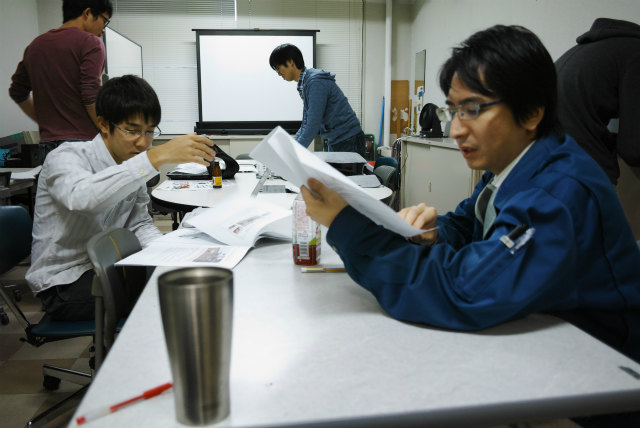
東先生立ち会い |
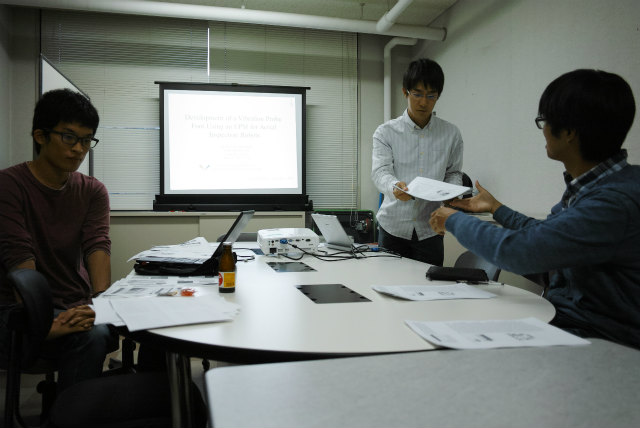
まずはロボ研のA堀くん | ||
|
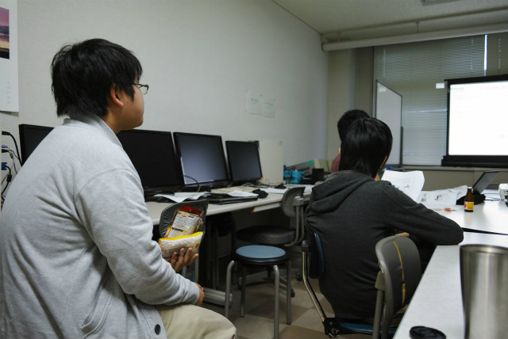
日本生まれイギリス育ち，悪そうな奴は大体友達な B4F井くんが立ち会い |
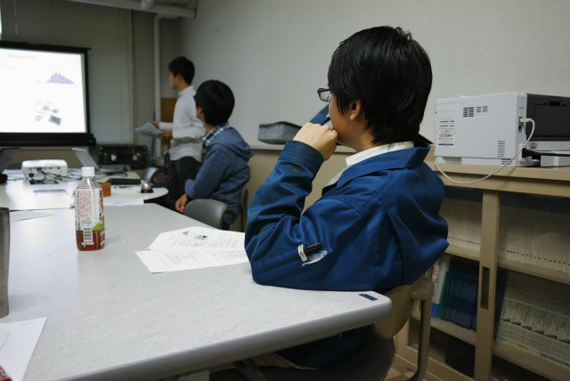
スタート | ||
|
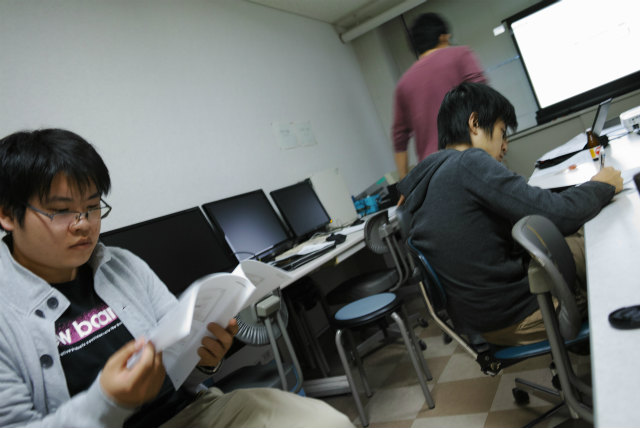
ふむふむ |
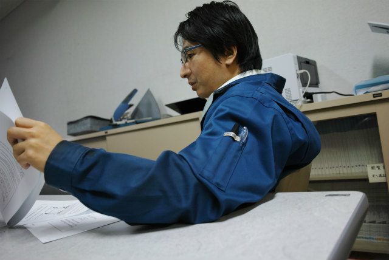
チェック中 | ||
|
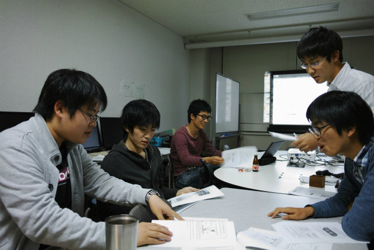
ネィテイブチェック |
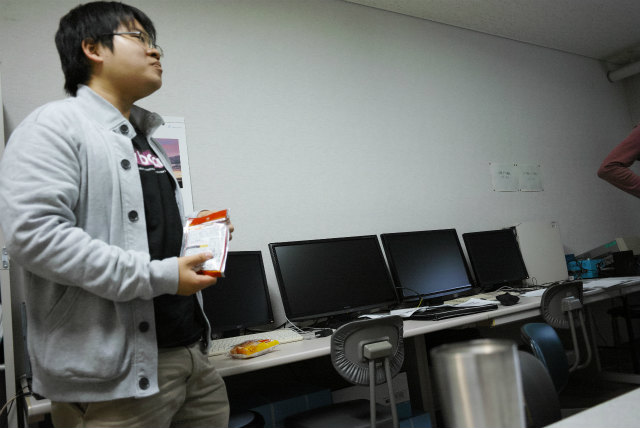
袋菓子よりイギリスキャラならスコーンがいいのに | ||
|
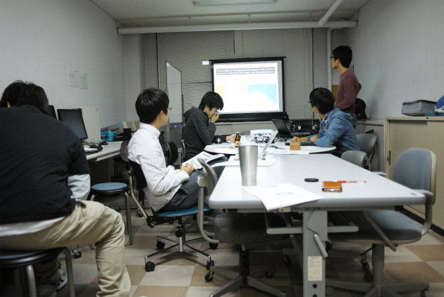
次はY西くん |
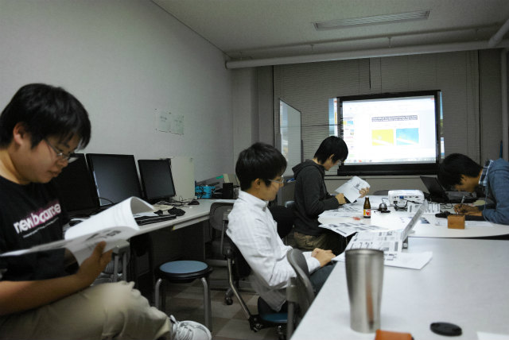
じゃ，最初からいこう | ||
|
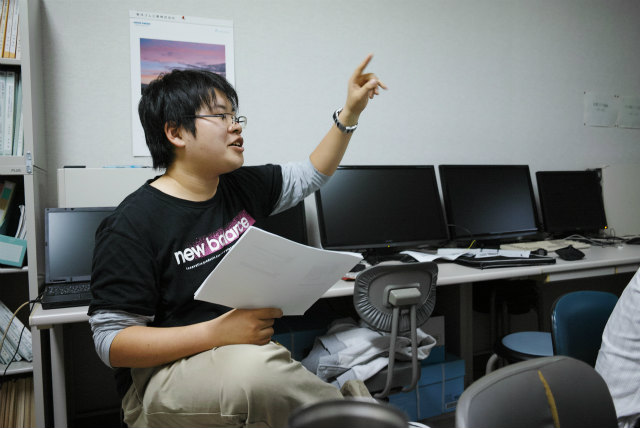
むぅ・・・この言葉は・・・ |
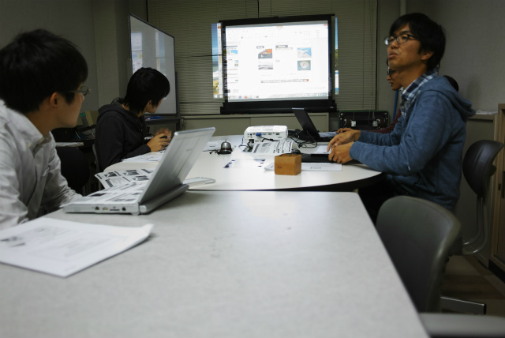
知ってるのか雷電！！ | ||
|
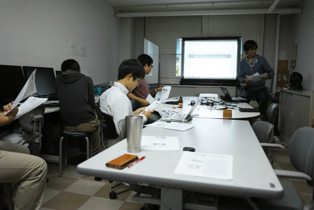
次はShogo |
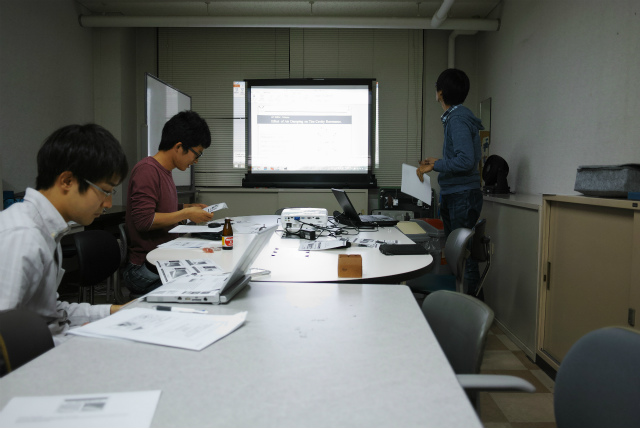
英語もスライドも基本に忠実で判りやすい | ||
|
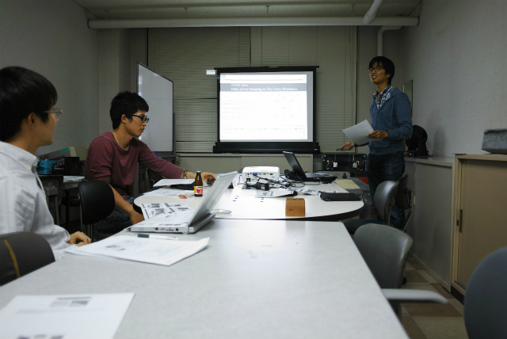
ネィテイブも納得でした |
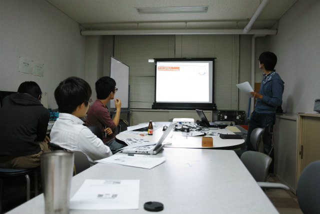
あとは台詞とクリックアクションのシンクロ率を上げるだけ | ||
|
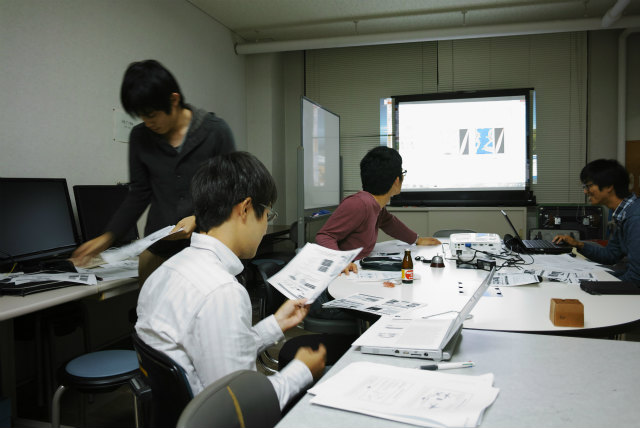
今年はAJKも行ったので余裕ですよ（TNくん） |
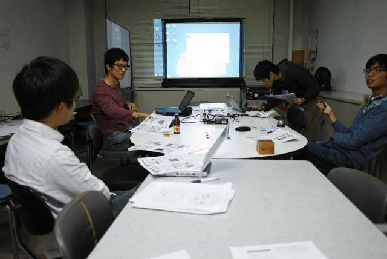
本当の英語口頭発表をお見せしますよ。 | ||
|
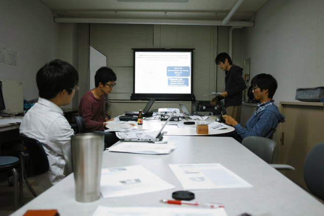
ちゃんと強調する語句の発音を使い分けてます （助教の人は見た！AJKの後から努力していました） |
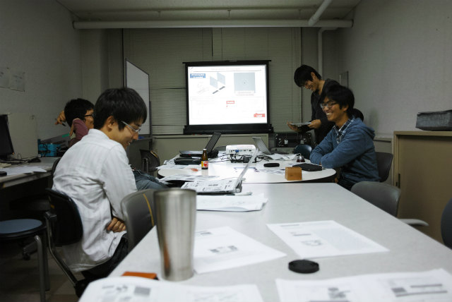
あっ，これAJKのスライドなんでデザインが 合ってなくてサーセン（ドヤ顔） | ||
|
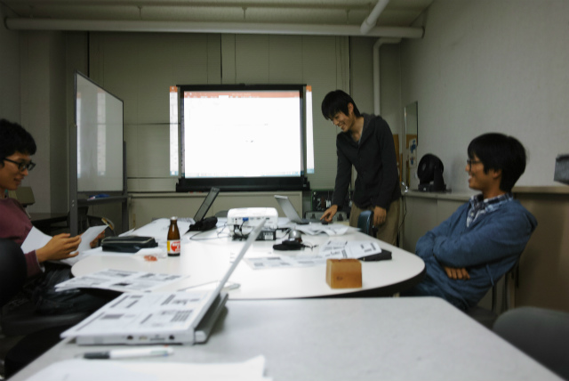
ドヤ顔いただきました |
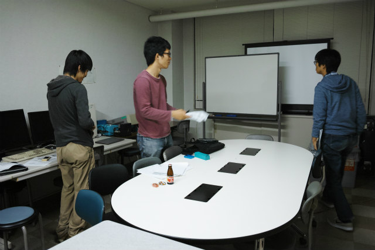
さて，本番の質疑はどうなんでしょうか | ||